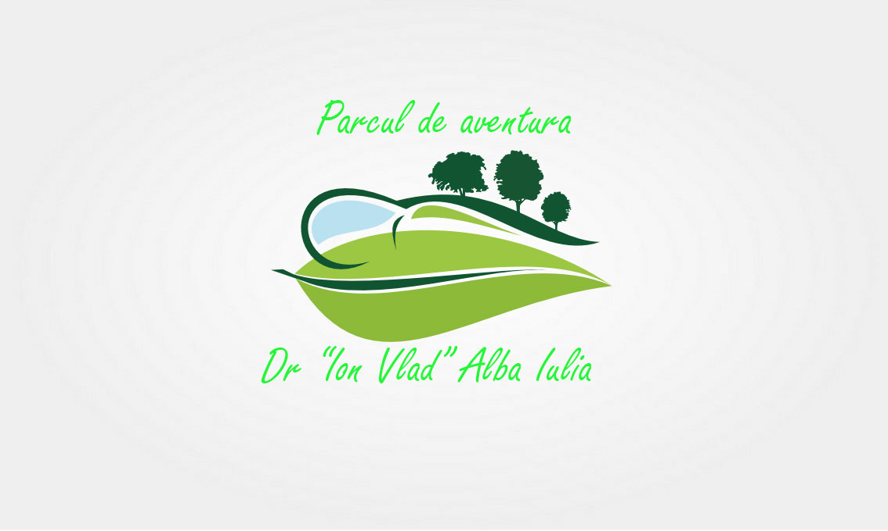

Descriere
- Parcul de aventura Dr "Ion Vlad" Alba Iulia este unul dintre cele mai mari parcuri de aventura din Transilvania. A fost construit in anul 1960 la marginea orasului Alba Iulia, pe strada Valea Popii, in interiorul Parcului Dendrologic Doctor Ion Vlad. In zona se gaseste pista De biciclete "Mamut", Manastirea Sf. Ioan Botezatorul si barul Panoramic-Bar&Grill.
In 2016, am avut 10000 de vizitatori, iar in 2018 numarul a cresut la 16000.
- Ce activitati se desfasoara?
- In incinta parcului avem urmatoarele componente:
- Doua trasee in copaci
- Trei locuri de joaca pentru copii
- Un perete de escalada
- Spatiu de inchiriere biciclete, care face legatura cu pista de biciclete "Mamut" de pe strada Valea Popii
- Zona de tir cu arcul si darts
- Teren de echitatie
- Pentru mai multe detalii legate de componente, intrati aici.
- Care sunt preturile?
- Preturile le gasiti aici.
- Unde este localizat parcul?
- Mai multe detalii aici.
- Care este programul?
- Programul il puteti vedea in tabelul de mai jos:
| Zi saptamana |
Orar |
| Luni |
10:00-20:00 |
| Marti |
| Miercuri |
| Joi |
| Vineri |
| Sambata |
07:00-22:00 |
| Duminica |
Unde va putem contacta/Unde se gaseste parcul?
Mai multe detalii aici.